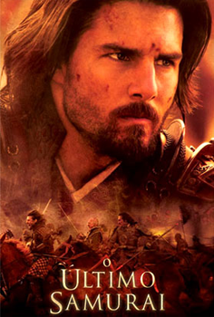

|

|
O capitão americano Nathan Algren vai até o Japão
e é capturado em uma batalha contra os samurais.
Assim ele treina técnicas marciais com um ex-inimigo,
o samurai Katsumoto Moritsu.Então os dois temque fugir
do exército imperial Japonês, junto com o filho de Katsumoto.
Depois da morte do filho de Katsumoto, Nathan e Katsumoto reúnem
alguns guerreiros e começam uma batalha contra o exército imperial.
Na batalha, os cavalos de Nathan e Katsumoto são atingidos e eles
caem no chão. Então, Katsumoto se suicida. Nathan não é capturado
e volta para a aldeia, sendo o último samurai...
- Tom Cruise
- Ken Watanabe
- Billy Connolly
- Sosuke Ikematsu
- Tony Goldwyn
|